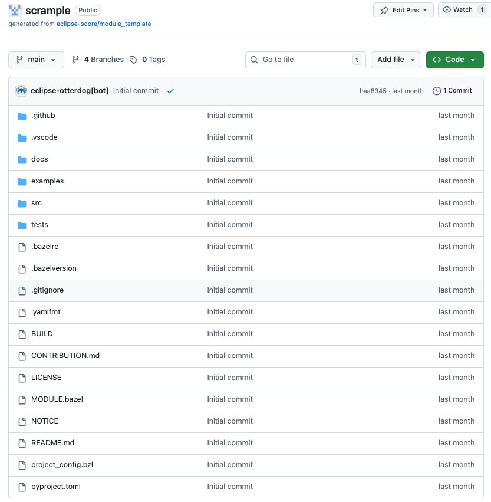

First Eclipse S-CORE Module#
Before starting, ensure you are an official contributor to the Eclipse S-CORE project. Otherwise, you will not have required permissions. Instructions can be found in Actions to ensure Proper Contribution Attribution in Eclipse S-CORE.
Once you have created an Eclipse account, accepted Eclipse Contributor Agreement (ECA), and linked your GitHub account with your Eclipse Account, contact one of the Eclipse S-CORE Project Leads (listed at the official Eclipse SDV S-Core webpage). They will add you to the list of the official contributors of the Eclipse S-CORE GitHub organization.
The recommended communication channel to approach Eclipse S-CORE project leads is the eclipse sdv slack channel.
Creating a Repository for Your Module#
After becoming part of Eclipse S-CORE GitHub organization, you can create a repository for your module. Repository creation follows Eclipse organizational rules. Most configuration is handled via otterdog configuration located in:
Create a private fork of this repository and modify the file:
Add your repository definition, e.g.:
newModuleRepo('logging') {
description: "Repository for logging framework",
},
newModuleRepo('scrample') {
description: "Repository for example component",
},
newModuleRepo('inc_abi_compatible_datatypes') {
description: "Incubation repository for ABI compatible data types feature",
},
Then, create a PR in the eclipse-score/.eclipsefdn repository. The PR must be approved by:
Eclipse S-CORE project lead
Eclipse Foundation Security Team
Tip
To speed up approval, mention both groups in your PR comment:
@eclipse-score/automotive-score-project-leads
@eclipse-score/eclipsefdn-security
Please approve.
Repository Layout#
Once merged, your new repository will appear in the Eclipse S-CORE GitHub organization repositories overview.
{kind=link}

All repositories are created using the Eclipse S-CORE module template.
The README.md file already explains the basic structure. Below is an overview of the most relevant files and folders.
.github/workflows/#
Contains CI/CD workflows (build, unit-tests, integration gate checks).
.vscode#
Provides Eclipse S-CORE recommended VS Code setup, including code completion patterns for requirements and architecture in .vscode/restructuredtext.code-snippets.
Tip
The Eclipse S-CORE project provides a ready-to-use Dev Container with all required tools pre-installed. Open any module repository with the VS Code Dev Containers extension to skip manual toolchain setup entirely.
docs#
Place all module documentation here in rst format. Examples follow later in this guide.
Tip
We try to describe most common workflows for developers. It is worth checking it.
score/#
Source files and unit tests for the module.
Follows the naming convention score/<module_name>/.
tests/#
Component Integration Tests (CIT) and Feature Integration Tests (FIT). See the Technology Overview for details on test levels.
.bazelrc#
Defines bazel configuration for your the module. Important entries in .bazelrc file include:
1build --java_language_version=17
2build --tool_java_language_version=17
3build --java_runtime_version=remotejdk_17
4build --tool_java_runtime_version=remotejdk_17
5
6test --test_output=errors
7
8common --registry=https://raw.githubusercontent.com/eclipse-score/bazel_registry/main/
9common --registry=https://bcr.bazel.build
Line number 8 points to the Eclipse S-CORE https://github.com/eclipse-score/bazel_registry, where all official versions of Eclipse S-CORE modules are published.
Line number 9 points to the common bazel registry, where common bazel modules are made available for everyone.
This means, once we´re referencing a depending module with our scrample application, bazel will start searching it in one of these two locations.
MODULE.bazel#
This file turns your repository into a bazel module.
Let us check MODULE.bazel initial content:
1module(
2 name = "cpp_rust_template_repository",
3 version = "1.0",
4)
Here, we´re making the first declaration of our module by defining a name and a version. Please be aware, that only after our module was published in the Eclipse S-CORE bazel registry, other modules can access it.
Rename the module and replace cpp_rust_template_repository by your module name, in our case score_scrample.
Use semantic versioning for the module version, starting at 0.1.0.
1module(
2 name = "score_scrample",
3 version = "0.1.0",
4)
Please be aware, according to Eclipse S-CORE´s naming convention all module names must start with score_ prefix.
1bazel_dep(name = "rules_python", version = "1.4.1")
2
3PYTHON_VERSION = "3.12"
4
5python = use_extension("@rules_python//python/extensions:python.bzl", "python")
6python.toolchain(
7 is_default = True,
8 python_version = PYTHON_VERSION,
9)
10use_repo(python, "python_versions")
11
12# Add GoogleTest dependency
13bazel_dep(name = "googletest", version = "1.17.0")
14
15# Rust rules for Bazel
16bazel_dep(name = "rules_rust", version = "0.63.0")
17
18# C/C++ rules for Bazel
19bazel_dep(name = "rules_cc", version = "0.2.1")
In the code snippet above, we declare dependencies to modules, that are publicly available in common bazel registry, e.g. for unit test execution with gtest.
1# C++ and QNX toolchains (same setup as score_baselibs / score_baselibs_rust)
2bazel_dep(name = "score_bazel_cpp_toolchains", version = "0.5.1", dev_dependency = True)
3
4gcc = use_extension("@score_bazel_cpp_toolchains//extensions:gcc.bzl", "gcc", dev_dependency = True)
5gcc.toolchain(
6 name = "score_gcc_x86_64_toolchain",
7 target_cpu = "x86_64",
8 target_os = "linux",
9 use_default_package = True,
10 version = "12.2.0",
11)
12gcc.toolchain(
13 name = "score_qcc_x86_64_toolchain",
14 sdp_version = "8.0.0",
15 target_cpu = "x86_64",
16 target_os = "qnx",
17 use_default_package = True,
18 version = "12.2.0",
19)
20use_repo(
21 gcc,
22 "score_gcc_x86_64_toolchain",
23 "score_qcc_x86_64_toolchain",
24)
25
26# Ferrocene Rust toolchains (QNX cross-compilation support)
27bazel_dep(name = "score_toolchains_rust", version = "0.9.1", dev_dependency = True)
Here we add C++ and Rust toolchains using score_bazel_cpp_toolchains and score_toolchains_rust.
These provide GCC 12.2.0 for Linux host builds, QCC (QNX SDP 8.0.0) for QNX cross-compilation,
and Ferrocene toolchains for Rust (including QNX support).
In upcoming chapters, we will talk about this in more detail.
1# tooling
2bazel_dep(name = "score_tooling", version = "1.1.2")
3
4# docs-as-code
5bazel_dep(name = "score_docs_as_code", version = "4.0.3")
6
7# Rust linting and formatting policies
8bazel_dep(name = "score_rust_policies", version = "0.0.3")
Finally, we add dependencies to Eclipse S-CORE native modules:
score_tooling: enables tooling checks such as copyright and license verification.
score_docs_as_code: enables documentation builds with Sphinx and sphinx-needs.
score_rust_policies: provides centralised Rust linting (clippy) and formatting (rustfmt) policies. For C++ projects, use
score_cpp_policiesinstead.
Tip
Working across multiple modules and repositories can be challenging. Use the following approach during development:
use git_override() if you want to use a version of another module, that is currently not officially availabe in the bazel registry.
use local_path_override() if you want to use your local version of the module, e.g. during active development.
BUILD#
The bazel BUILD file contains main bazel targets on the top level of the scrample project:
1load("@score_docs_as_code//:docs.bzl", "docs")
2load("@score_tooling//:defs.bzl", "copyright_checker", "dash_license_checker", "setup_starpls", "use_format_targets")
3load("//:project_config.bzl", "PROJECT_CONFIG")
First, we load bazel rules and macros, implemented in Eclipse S-CORE context from the modules, that we’ve defined as dependencies in the MODULE.bazel file, e.g. https://github.com/eclipse-score/docs-as-code.
1copyright_checker(
2 name = "copyright",
3 srcs = [
4 "src_cpp",
5 "tests",
6 "//:BUILD",
7 "//:MODULE.bazel",
8 ],
9 config = "@score_tooling//cr_checker/resources:config",
10 template = "@score_tooling//cr_checker/resources:templates",
11 visibility = ["//visibility:public"],
12)
13
14dash_license_checker(
15 src = "//examples:cargo_lock",
16 file_type = "", # let it auto-detect based on project_config
17 project_config = PROJECT_CONFIG,
18 visibility = ["//visibility:public"],
19)
Second, we define bazel targets for copyright_checker and dash_license_checker, based on bazel rules implemented and imported from https://github.com/eclipse-score/tooling module.
1docs(
2 source_dir = "docs",
3)
Finally, the docs target builds all documentation in the .rst format, which is located in the docs folder and all its subfolders. This functionality is implemented in eclipse-score/docs-as-code.
project_config.bzl#
Every Eclipse S-CORE module must provide a project_config.bzl file in its root directory.
This file declares project-level metadata that is consumed by shared Bazel macros such as dash_license_checker.
A minimal example:
1PROJECT_CONFIG = {
2 "asil_level": "QM", # Safety level: "QM", "ASIL-A", "ASIL-B", "ASIL-C", "ASIL-D"
3 "source_code": ["cpp"], # Languages used: "cpp", "rust", or both
4}
The asil_level is used by tooling to apply the appropriate quality and compliance checks.
The source_code list determines which license file types are scanned by dash_license_checker
(e.g., Cargo.lock for Rust, requirements.txt for Python).
Tip
Start with "asil_level": "QM" during initial development.
The level can be raised once the module’s safety concept is established.